We evaluated the model in real-world settings by directly deploying the pre-trained policy, which was originally trained on simplified rheological materials using a particle-based representation. This representation captures two fundamental characteristics of rheological materials—fluidity and deformability. Fine-tuning further introduced fluid-specific representations to better capture the task-relevant dynamics of particular rheological classes. The comparison below illustrates the behavioral differences before and after fine-tuning, showcasing both successful and failed executions.
Abstract
Robotic manipulation in environments such as biochemical laboratories and kitchens faces challenges due to the rheological heterogeneity of materials, affecting their mechanical response to external forces. Traditional approaches often focus on manipulating materials of a single rheological type, neglecting how operational strategies must adapt when handling materials with varying flow and deformation characteristics. In this work, we introduce a hierarchical decision-making robotic manipulation system for cross-rheological material handling, namely RheoAgent, to tackle the robotics manipulation challenges posed by diverse rheological material scenarios. Our approach leverages dual-modal vision-driven reinforcement learning, which integrates pixel and voxel map representations, while additionally incorporating material classification from large vision-language models. This integration forms a system capable of flexible operations across various rheological materials. We adopt a curriculum-based differentiable training framework to balance learning efficiency and model accuracy. The policy is first pre-trained on simplified particle-based dynamics, followed by fine-tuning using a model-based short-horizon actor-critic algorithm to incorporate specific rheological characteristics. Under this framework, the pouring and gathering tasks achieved success rates of 99.08% and 95.12% for inviscid materials, 99.07% and 96.98% for viscous materials, and 98.53% and 97.51% for elasto-plastic materials, respectively. RheoAgent establishes a new framework for intelligent rheological material handling, with applications that extend to industrial automation, laboratory robotics, and assistive technologies.
Fine-tuned Model Evaluation

Real-world performance of the pre-trained model (trained on granular materials). a, Real-world performance of the pre-trained model (trained on granular materials). b, Sequential frames illustrating a real-world gathering scenario.
Comparison between Successful and Failed Executions
Success
Fail
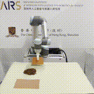
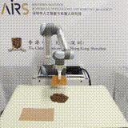
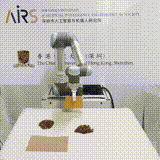
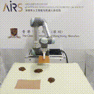
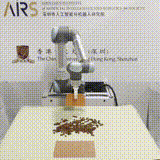
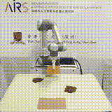
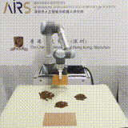
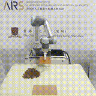
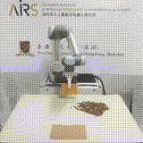
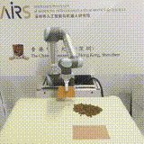
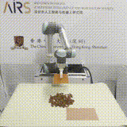
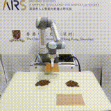
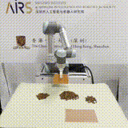
 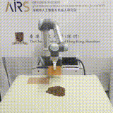
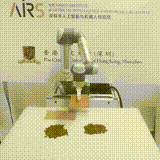
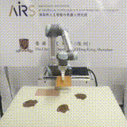
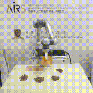
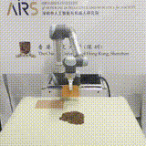
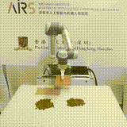
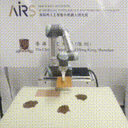
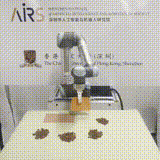
 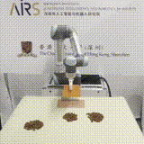
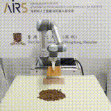
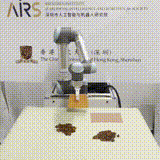
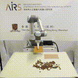
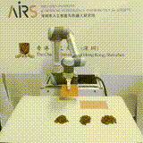
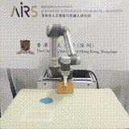
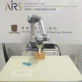
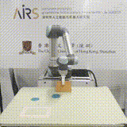
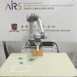
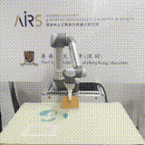
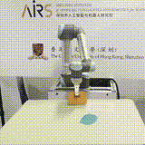
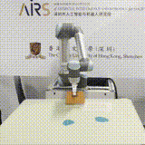
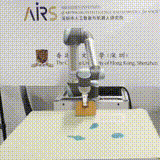
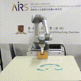
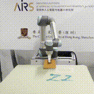
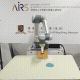
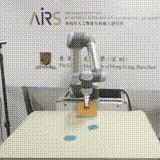
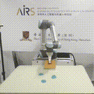
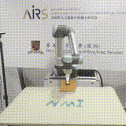
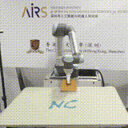
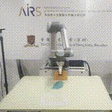
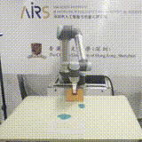
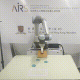
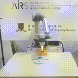
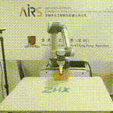
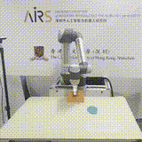
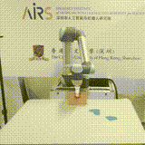
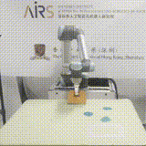
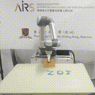
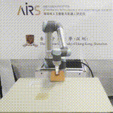
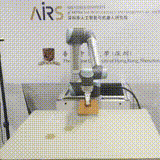
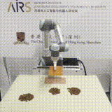
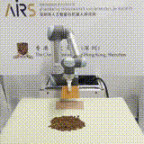
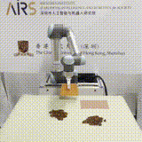
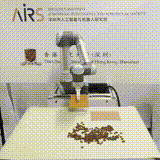
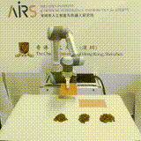
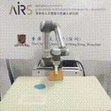
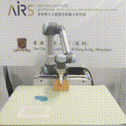
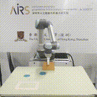
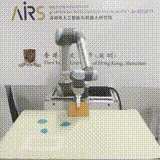
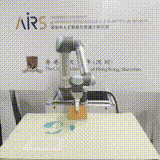
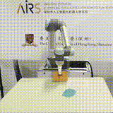
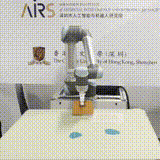
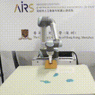
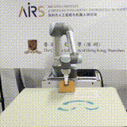
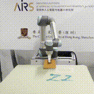
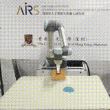
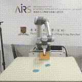
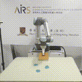
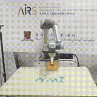
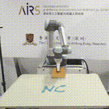
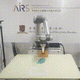
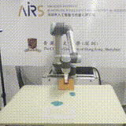
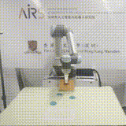
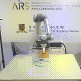
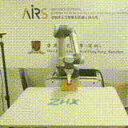
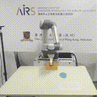
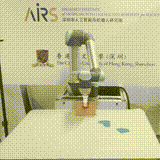
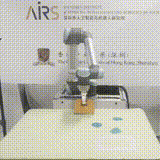
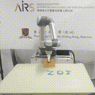
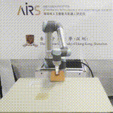
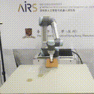
 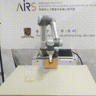
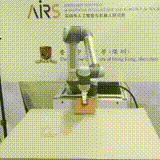


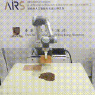
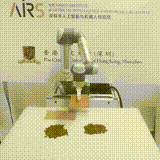
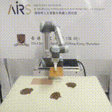
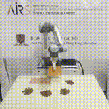
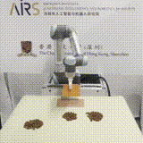
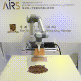
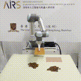
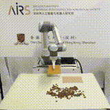
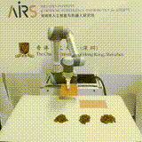
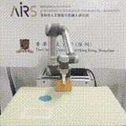
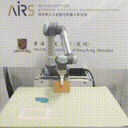
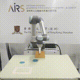
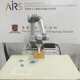
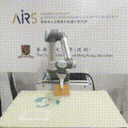
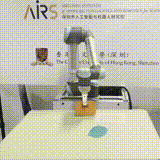
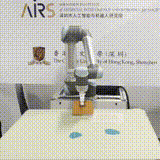
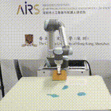
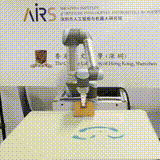
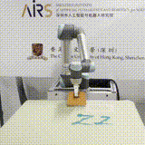
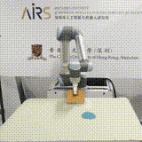
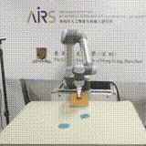
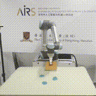
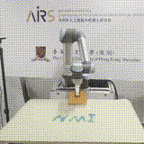
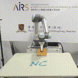
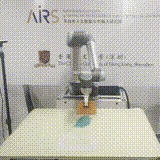
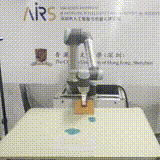
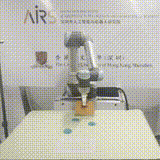
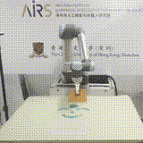
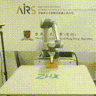
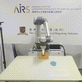
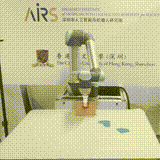
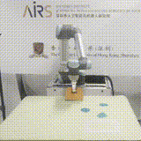
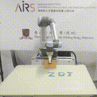
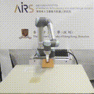
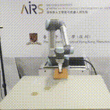
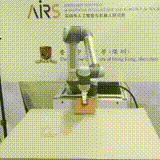
Real-time Segmentation and Perception Mapping
We employ the Segment Anything Model 2 (SAM2) to perform real-time segmentation of rheological materials from RGB-D inputs.
To build a consistent spatial understanding, multi-view RGB-D frames are fused into a globally aligned segmented point cloud.
This point cloud is then encoded into two representations:
- Pixel map: generated via orthographic projection of the segmented point cloud onto the vertical plane.
- Voxel map: constructed by encoding spatial occupancy on a latitude-longitude grid with normalized distances.
These representations serve as structured perceptual inputs for downstream robotic manipulation policies.

Visual encoding pipeline for real-world rheological perception.
a, Schematic of the real-world perception system. A dual-camera configuration mitigates point cloud occlusion. Green and blue arrows denote the viewing directions for generating voxel and pixel maps, respectively.
b, SAM2-based segmentation of kinetic sand from dual perspectives.
c, Agent-centric viewer constructed from multi-view fused point clouds. The blue spherical region denotes the field of view, where yellow and purple indicate closer and farther regions.
d, Top-down view of the fused point cloud, used for constructing orthographic projections.
e, Equirectangular projection of the spherical view forming the voxel map, based on latitude–longitude grid discretization with per-cell nearest distance encoding.
f, Rasterized orthographic pixel map derived from the top-down projection of the segmented point cloud.
We employ the Segment Anything Model 2 (SAM2) to perform real-time segmentation of rheological materials from RGB-D inputs. To build a consistent spatial understanding, multi-view RGB-D frames are fused into a globally aligned segmented point cloud. This point cloud is then encoded into two representations:
- Pixel map: generated via orthographic projection of the segmented point cloud onto the vertical plane.
- Voxel map: constructed by encoding spatial occupancy on a latitude-longitude grid with normalized distances.
These representations serve as structured perceptual inputs for downstream robotic manipulation policies.
Visual encoding pipeline for real-world rheological perception. a, Schematic of the real-world perception system. A dual-camera configuration mitigates point cloud occlusion. Green and blue arrows denote the viewing directions for generating voxel and pixel maps, respectively. b, SAM2-based segmentation of kinetic sand from dual perspectives. c, Agent-centric viewer constructed from multi-view fused point clouds. The blue spherical region denotes the field of view, where yellow and purple indicate closer and farther regions. d, Top-down view of the fused point cloud, used for constructing orthographic projections. e, Equirectangular projection of the spherical view forming the voxel map, based on latitude–longitude grid discretization with per-cell nearest distance encoding. f, Rasterized orthographic pixel map derived from the top-down projection of the segmented point cloud.
Pouring Under Human Disturbance
The robot continues pouring while a human introduces interference by shifting the target cup.
Gathering Under Human Disturbance
The robot continues collecting while a human introduces interference by adding material during and after the task.
Multi-Robot Collaboration: Collection
Two robots cooperate in a gathering task: the dual-arm Elephant Mercury B1 pushes material with a plate, while the UR5 collects it using a cup.
Two robots cooperate in a gathering task: the dual-arm Elephant Mercury B1 pushes material with a plate, while the UR5 collects it using a cup.
Related work

Overview of robotic system manipulation of rheological materials.
How does it work?

Overview of robotic system manipulation of rheological materials.
BibTeX
@article{haixu2025nmi,
author = {Haixu Zhang, Bo Zhang, Danyang Zhang, Xi Chen, Wenqiang Lai, Chi Zhang, Tin Lun Lam, Hu Huang, Yuan Gao},
title = {RheoAgent: A Cross-Rheological Material Handling Robotic Manipulation System via Hierarchical Decision-Making Framework},
journal = {xxx},
year = {2025},
}